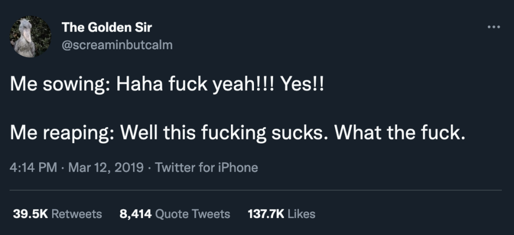

A loucura induzida por IA precisa acabar... mas não vai tão cedo 🙂
"Olá, sou eu senhor Mark Mc Big Tech! Você pediu mais IA integrada em todas as ferramentas que usa no seu dia a dia? Não? Que pena, pense no valor das nossas ações! "
https://www.wheresyoured.at/the-haters-gui/
Microsoft vai forçar instalação do Microsoft 365 Copilot no Windows em outubro: o aplicativo integra o assistente aos programas do Office, incluindo Word, Excel e PowerPoint. O software será adicionado ao Menu Iniciar e ativado por padrão. Administradores de TI em organizações poderão bloquear a instalação pelo Centro de Administração do Microsoft 365 Apps. O procedimento será realizado em dispositivos que possuam os apps de desktop do Microsoft 365. As informações são do site BleepingComputer.
Estudo mostra que certos conteúdos gerados por IA podem afetar produtividade no trabalho: o termo “workslop” descreve conteúdos profissionais, como slides e relatórios, produzidos pela tecnologia que aparentam ter qualidade, mas exigem retrabalho dos colegas. Em entrevista com 1.150 funcionários nos EUA de diversos setores, 40% relatam ter recebido workslop no último mês. “Slop” está se tornando o termo para classificar conteúdos indesejados gerados por IA, semelhante ao “spam” para emails. As informações são do site Harvard Business.
Os agentes estão por aí...
Comandos ocultos em pixels de imagens podem manipular agentes de IA, segundo estudo: essas mensagens, invisíveis ao olho humano, podem instruir o sistema a expor dados sensíveis. Uma foto publicada no X também poderia induzir o modelo a retuitar o conteúdo, desencadeando um efeito em cascata. Os pesquisadores alertam especialmente para IAs de código aberto, as quais permitem que qualquer pessoa estude como a tecnologia interpreta pixels. Os papéis de parede são considerados uma ameaça particular por permanecerem visíveis constantemente no computador. Apesar disso, não há registros de casos reais de exploração. As informações são do site LiveScience.
OpenAI corrige falha que permitia extrair dados de usuários que integram suas contas Gmail ao ChatGPT e usavam a ferramenta Deep Research: bastava que o usuário tivesse sua conta conectada ao ChatGPT e recebesse um e-mail malicioso contendo prompts ocultos no HTML, utilizando técnicas como texto branco sobre fundo branco. A solicitação maliciosa era executada a partir da própria infraestrutura da OpenAI, enviando o conteúdo das mensagens para um servidor controlado pelo invasor.Não há informação se a falha – chamada ShadowLeak – chegou a ser explorada ativamente. As informações são do site The Register.
Echo leak
Deixe seu Linkedin flantástico
https://80.lv/articles/linkedin-user-made-ai-recruiters-reveal-themselves-by-giving-him-flan-recipe
Empresas colhendo o que plantaram

https://www.instagram.com/p/DOMvRgsldPu/
Desenvolvedores freelancers e empresas lucram corrigindo softwares criados com vibe coding: segundo o programador Hamid Siddiqi, os ajustes vão de interfaces inconsistentes e códigos mal otimizados a correções visuais, como cores, animações e layouts. No setor empresarial, a Ulam Labs é um dos exemplos de companhias que atuam nesse segmento. Já a plataforma VibeCodeFixers conta com quase 300 programadores cadastrados. Segundo seu criador, a maior parte dos vibe coders são gerentes de produto, profissionais de vendas ou pequenos empreendedores. As informações são do site 404 Media.
https://www.404media.co/the-software-engineers-paid-to-fix-vibe-coded-messes/
No entanto, toda essa coisa de codificação de vibe não parece estar funcionando para as empresas, já que gerar código por meio de um prompt de LLM em uma velocidade vertiginosa pode, previsivelmente, levar a um trabalho abaixo do esperado. Agora, ironicamente, parece que, tendo dispensado programadores mais qualificados em troca da eficácia barata de um programador auxiliado por chatbot, as empresas estão tendo que contratar mais profissionais para consertar os erros da IA.